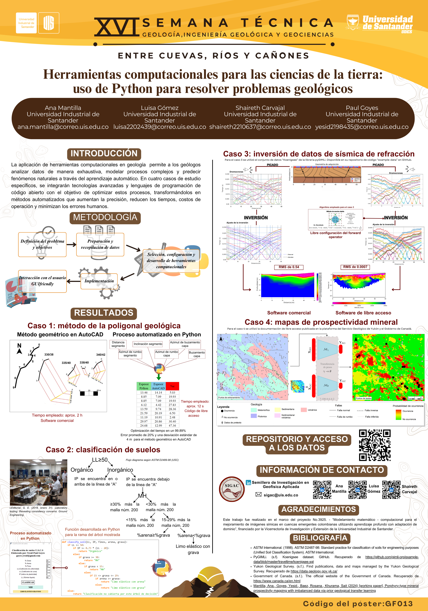

Geología computacional · Python · Automatización
Herramientas computacionales para las ciencias de la Tierra: uso de Python para resolver problemas geológicos
Este trabajo reúne cuatro aplicaciones de herramientas computacionales para resolver problemas geológicos. Mediante Python, programación y herramientas de libre acceso, se desarrollaron procedimientos orientados a automatizar tareas, facilitar el análisis de datos y optimizar procesos en las geociencias.
Autores
Investigaciones desarrolladas
El proyecto se estructuró en cuatro casos de estudio:
| Investigación | Herramientas | Aplicación |
|---|---|---|
| 01 Método de la poligonal geológica | Python | Automatización del cálculo del espesor real de capas estratigráficas. |
| 02 Clasificación de suelos | Python Flutter | Desarrollo de una aplicación (APK) para automatizar la clasificación de suelos según el sistema unificado y la norma ASTM. |
| 03 Inversión de datos de sísmica de refracción | Python pyGIMLi | Inversión de datos para obtener tomografías de velocidad del subsuelo somero mediante herramientas de libre acceso. |
| 04 Mapas de prospectividad mineral | Aprendizaje automático Redes neuronales | Elaboración de mapas de prospectividad mineral mediante técnicas de aprendizaje automático. |
Productos del proyecto
Los códigos, datos y materiales de las investigaciones se encuentran disponibles en el repositorio del proyecto.
Códigos y datos
Repositorio con los archivos y recursos utilizados en los cuatro casos de estudio.
Explorar repositorio en GitHub ↗Póster científico
Trabajo presentado en la XXVI Semana Técnica de Geología, Ingeniería Geológica y Geociencias.
Ver póster ↓Póster de presentación

Póster presentado en la XXVI Semana Técnica de Geología, Ingeniería Geológica y Geociencias · Código GF013 · 2024.